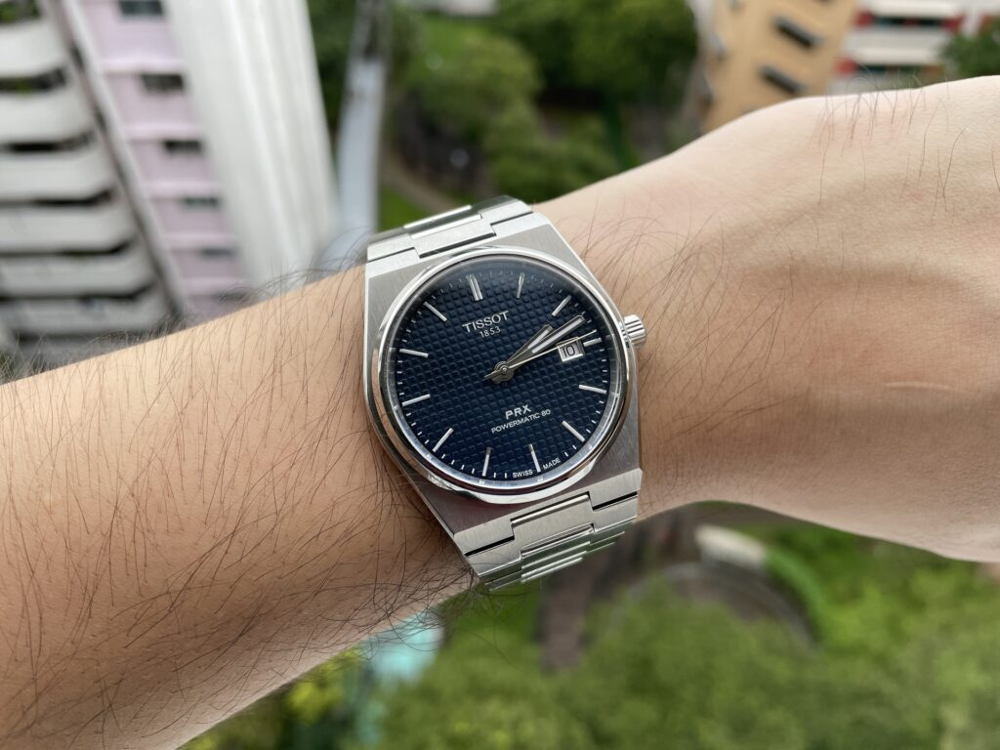
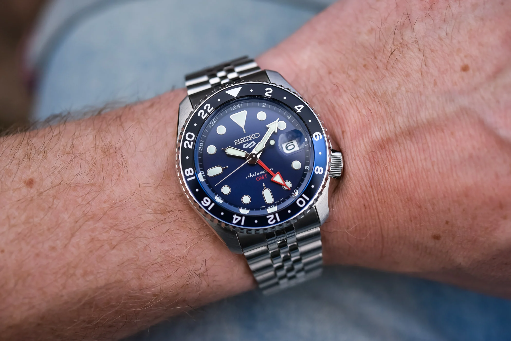

BuckWatch is a third party seiko and tissot dealer
which was founded in 2000 by James Rodneck
James rodneck was a watch mechanic from 1989
till 1995
when he decided to start his own shop
Which eventually became an online marketplace for these two brands